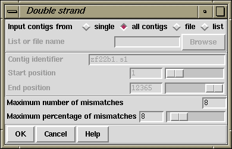

The purpose of this function (which is available from the gap4 Edits menu) is to use hidden data to fill regions of contigs that have data on only one strand (see section Use of the "hidden" poor quality data). First the routine finds a region that has data for only one strand. Then it examines the nearby readings on the other strand to see if they have hidden data that covers the single stranded region. If so it finds the best alignment between this hidden data and the consensus over the region. If this alignment is good enough the data is converted from hidden to visible. This process is continued over all the selected contigs. The function can be run on a subsection of a single contig, on all contigs, or on a subset of contigs that are named in a file of a list.
Significant portions of the sequence can be covered by this operation, hence saving a great deal of experimental work, and it can be used as a standard part of cleaning up a sequencing project. However it must be noted that an increased number of edits may be required after its application. The amount of cutoff data used depends on the number of mismatches and the percentage mismatch in the alignment. That is, it depends on the quality of the alignment, not the quality of the data: if it aligns it is assumed to be correct!
The program reports its progress in the Output window as shown in the following example.
Wed 03:52:46 PM: double strand ------------------------------------------------------------ Double stranding contig xf48g3.s1 between 1 and 6189 Double stranded zf23b2.s1 by 121 bases at offset 3752 Double stranded zf18g11.s1 by 194 bases at offset 5652 Positive strand : Double stranded 315 bases with 2 inserts into consensus Filled 0 holes Complementing contig 358 Double stranded zg29a11.s1 by 42 bases at offset 5265 - Filled Double stranded zf38c7.s1 by 131 bases at offset 5015 - Filled Negative strand : Double stranded 174 bases with 1 insert into consensus Filled 2 holes

The contigs to process can be a particular "single" contig, "all contigs", or a subset of contigs whose names are stored in a "file" or a "list". If a file or list is selected the browse button will be activated, and if it is clicked, an appropriate browser will be invoked. If the user selects "single" then the dialogue for choosing the contig and the section to process becomes active.
Only alignments with not more than "Maximum number of mismatches" and "Maximum percentage of mismatches" will be accepted.